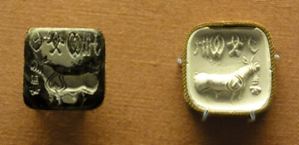
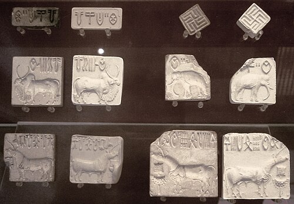
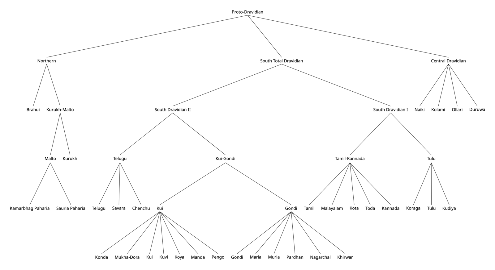
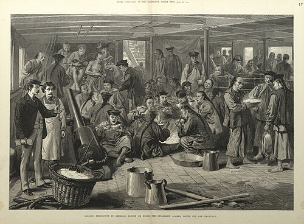
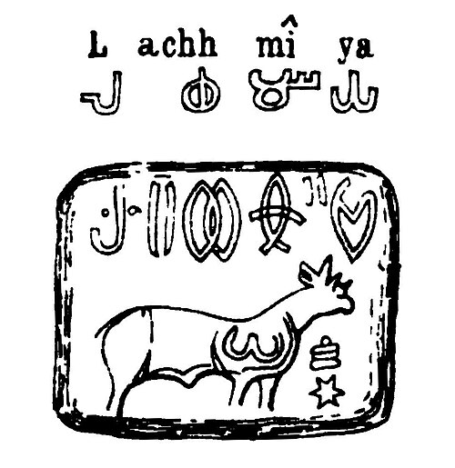

Projects
-

Indus Script Sign FunctionsKey to deciphering the Indus script is identifying which signs are phonetic and which are logographic. I'm applying computation to this problem, using statistical and distributional patterns in the corpus to differentiate these groups.
I described my methods and results in an IJCA paper and another now under review at Digital Applications in Archaeology and Cultural Heritage. The broader Indus work was supported in part by an Emergent Ventures grant in 2025.
-

Semantic Roles in Indus Sign ClustersThis Indus project, under the mentorship of Rajesh Rao (UW), aims to identify the semantic roles of Indus sign clusters.
Our goal is to avoid making linguistic assumptions about the script. Instead, our analysis relies entirely on statistical and distributional evidence: where sign clusters occur, what they co-occur with, and how they pattern across the corpus. A chapter co-authored with Rao is forthcoming.
In the press: “The Indus Code: Who is in the race to crack a 4,000-year-old script?” — The Indian Express →
-

Proto-Dravidian Lexical DatabaseAt the Technische Universität Berlin, I built a structured database of reconstructed Proto-Dravidian vocabulary under the supervision of Andreas Fuls and Martin Kada.
This work was conducted by compiling existing research and by using AI and computational tools to automate the process of reconstructing words. One book chapter documenting this project is forthcoming in January 2027.
-
The Evolution of Written Chinese, 1910–1945
A computational study of Chinese-language newspapers from the Republican era, tracking how written Chinese shifted across this pivotal period of political and social change.
A dataset is published in the Journal of Open Humanities Data (2026), and a paper has been accepted in Computational Humanities Research (CHR 2027), where I'll be presenting in January 2027. Read the Research Square preprint →
-
Mount Zion Cemetery — GIS Mapping & Digital Archive
Mount Zion and Female Union Band Cemetery is one of the oldest African American cemeteries in Washington, D.C. I compile archival material tied to the cemetery and create interactive maps, geospatial datasets, and public digital resources. I presented this work at the 52nd Annual D.C. History Conference (2026).
Mount Zion/FUBS map →
Historic Wilberforce neighborhood map → -

The Creation of Chinese AmericaAt the New York Historical Society, I conducted historical research in collaboration with other interns on The Chinese American, one of the earliest Chinese American newspapers, and built a digital exhibit titled The Creation of Chinese America to present our findings.
-
 Provenance Analysis of the British Museum
Provenance Analysis of the British MuseumWhile at the Stanford Humanities Institute, I began working on a project to analyze the provenance records of the British Museum to identify unfair colonial extractions.
I scraped over 20,000 records and built an interactive map to visualize their extraction. The resulting paper has been accepted in Computational Humanities Research (CHR 2027), where I'll be presenting it in January 2027.
-

Brahmi Script: Origins in the Indus ValleyAn independent research project examining the hypothesis that Brahmi (ancestor of nearly every South and Southeast Asian writing system) derived from the Indus Script. Available as a preprint.